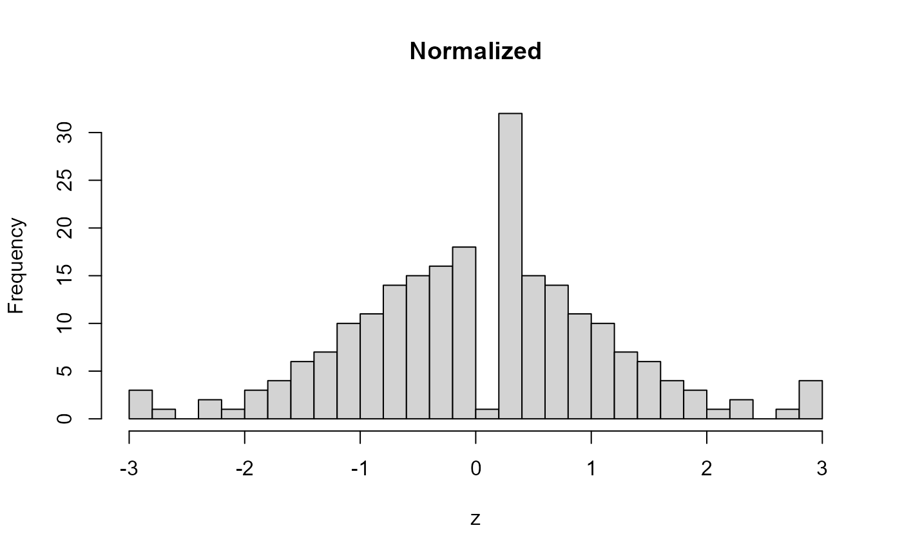

Convenience wrapper that calls find_best_normalization() and
apply_normalization() in a single step. For repeated application of
the same fitted model use those functions directly.
The function winsorizes x according to range and winsorize, isolates
the stable interior (non-sentinel, non-NA values) to fit transformation
parameters, then scores all observations – including sentinels – using
those fitted parameters. This prevents boundary pile-up at winsorization
bounds from distorting the centering and spread estimates.
Four transformation types are supported:
"asinh": inverse hyperbolic sine, scaled by the median absolute nonzero value of the stable interior. Defined at zero, accommodates negatives, and behaves like log in the tails."logit": maps the stable interior to [0, 1] relative to its theoretical support, then appliesqlogis(). Suited to variables bounded in [0, 1] without heavy boundary mass."rank_normal": rank-based inverse normal transform. Preserves ordering, not distances. Robust to irregular shapes and mixed support."hurdle": structural-zero mass receives 0; positive values are transformed separately (rank or logit) and rescaled to a positive interval.
When vtype = NULL the type is auto-detected from the stable interior using
heuristics based on the support range and boundary mass.
Arguments
- x
A numeric vector.
- range
Character range code (
"np","zp","zo","nz", or"lo;hi"). Required.- vtype
Optional transformation override. One of
NULL,"asinh","logit","rank_normal","hurdle".- winsorize
Winsorization proportion. Default
0.98.- offset
Sentinel offset for fixed bounds. Default
0.001.- standardize
Logical. Standardize after transformation. Default
TRUE.- robust
Logical. Use median/MAD standardization. Default
TRUE.- zero_tol
Tolerance for zero detection. Default
1e-8.- one_tol
Tolerance for near-one detection. Default
1e-8.- boundary_mass_cutoff
Hurdle/rank_normal trigger threshold. Default
0.10.- hurdle_trans
Positive-part method for hurdle variables (
"rank"or"logit"). Default"rank".- hurdle_range
Rescaled range for hurdle positive component. Default
c(1, 100).- verbose
Print diagnostic summaries. Default
TRUE.
Value
A numeric vector of the same length as x, with transformation
metadata attached as attributes (see apply_normalization()).
Examples
x <- c( NA, rnorm(200), rep(0, 20), 50, -50 )
# one-step normalize with auto-detected transformation
z <- normalize_x( x, range = "np", verbose = FALSE )
hist( z, breaks = 30, main = "Normalized" )

# force a specific transformation
z_asinh <- normalize_x( x, range = "np", vtype = "asinh", verbose = FALSE )